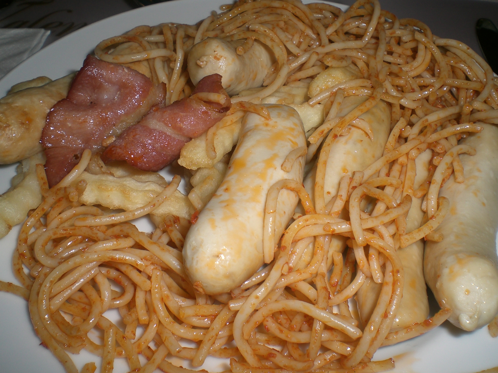

Draft only · noindex,nofollow · PL/EN · P1/P2 remediated
Dieta przy częstych delegacjach
Lead PL: Dieta przy częstych delegacjach: jedzenie w hotelu, trasie i restauracji bez oczekiwania, że delegacja będzie wyglądać jak domowy tydzień. Ten szkic ma pomóc czytelnikowi podjąć kilka małych decyzji w zwykłym tygodniu, bez obietnic leczenia, bez straszenia i bez planu, którego nie da się utrzymać przy pracy, rodzinie albo podróży.

Najważniejsze wnioski
- Najpierw nazwij sytuację: strategia jedzenia w trasie, hotelu i na stacji bez perfekcyjnego planu.
- Pierwszy krok to: ustal dwa stałe punkty: śniadanie z białkiem oraz awaryjną przekąskę, zanim zaczniesz wybierać restauracje.
- W praktyce oprzyj posiłki o: jogurt naturalny, owoce, orzechy w małej porcji, kanapka z jajkiem lub rybą, zupa, sałatka z białkiem, woda.
- Nie idź w skrót: najczęściej zawodzi brak planu między spotkaniami, nie pojedyncza kolacja w restauracji.
Szybka odpowiedź
Dieta przy częstych delegacjach dotyczy przede wszystkim sytuacji: strategia jedzenia w trasie, hotelu i na stacji bez perfekcyjnego planu. Najlepszy punkt wyjścia to zwykły tydzień, w którym da się powtórzyć podobne posiłki i zauważyć, co naprawdę pomaga. Artykuł nie ustawia jednej idealnej diety; porządkuje decyzje, które mają największą szansę być wykonane.
Od czego zacząć
Pierwszy krok: ustal dwa stałe punkty: śniadanie z białkiem oraz awaryjną przekąskę, zanim zaczniesz wybierać restauracje. Dzięki temu zmiana jest mierzalna i nie zamienia się w chaotyczne usuwanie produktów. Jeśli po kilku dniach nie da się jej utrzymać, warto uprościć warunki, a nie dokładać kolejne zakazy.
Produkty, które pomagają w praktyce
W praktyce przydadzą się: jogurt naturalny, owoce, orzechy w małej porcji, kanapka z jajkiem lub rybą, zupa, sałatka z białkiem, woda. Taki zestaw daje punkt zaczepienia w sklepie i w kuchni. Nie każdy element musi pojawić się codziennie; ważniejsze jest, żeby posiłek miał funkcję: sycić, ułatwiać regularność albo zmniejszać liczbę przypadkowych decyzji.
Jak uprościć decyzję
Przy zakupach warto wybrać dwie wersje: domową i awaryjną. Domowa może być tańsza i bardziej powtarzalna, awaryjna ma ratować dzień, kiedy plan się rozsypuje. Wtedy czytelnik nie musi wybierać między perfekcją a całkowitym porzuceniem nawyku.
Co zwykle psuje plan
Najważniejsza pułapka: najczęściej zawodzi brak planu między spotkaniami, nie pojedyncza kolacja w restauracji. To szczególnie istotne w treściach zdrowotnych, bo radykalna rada często brzmi atrakcyjnie, ale nie daje lepszego monitorowania objawów ani jakości diety. Lepiej zmienić jeden element i wiedzieć, co się sprawdza.
Test na 7 dni
sprawdź menu dwóch miejsc obok hotelu i przygotuj jedną opcję ze sklepu na dzień z opóźnieniami. Do obserwacji wystarczą trzy sygnały: głód lub sytość, komfort trawienia oraz łatwość powtórzenia planu. Wyniki badań, masa ciała czy objawy przewlekłe wymagają dłuższego horyzontu niż jeden weekend.
Sygnały do konsultacji
przy cukrzycy, leczeniu farmakologicznym lub chorobach przewodu pokarmowego podróżny plan posiłków wymaga większej precyzji. Ten tekst jest edukacyjny i nie zastępuje diagnozy, leczenia ani indywidualnej konsultacji z lekarzem lub dietetykiem.
FAQ
Od czego zacząć przy temacie: dieta przy częstych delegacjach?
Zacznij od najprostszej obserwacji: ustal dwa stałe punkty: śniadanie z białkiem oraz awaryjną przekąskę, zanim zaczniesz wybierać restauracje. Jedna zmiana daje lepszą informację niż pięć działań wprowadzonych jednocześnie.
Czy potrzebuję specjalnych produktów?
Zwykle nie. Najpierw wykorzystaj proste opcje: jogurt naturalny, owoce, orzechy w małej porcji, kanapka z jajkiem lub rybą, zupa, sałatka z białkiem, woda. Produkty specjalistyczne mają sens dopiero wtedy, gdy rozwiązują konkretny problem, a nie tylko wyglądają zdrowiej.
Kiedy dieta nie wystarczy?
przy cukrzycy, leczeniu farmakologicznym lub chorobach przewodu pokarmowego podróżny plan posiłków wymaga większej precyzji. W takich sytuacjach dieta może być wsparciem, ale nie powinna opóźniać diagnostyki ani leczenia.
Nota bezpieczeństwa
Artykuł ma charakter edukacyjny i nie zastępuje diagnozy, leczenia ani indywidualnej konsultacji medycznej lub dietetycznej. przy cukrzycy, leczeniu farmakologicznym lub chorobach przewodu pokarmowego podróżny plan posiłków wymaga większej precyzji
Eating well during frequent business trips
Lead EN: Eating well during frequent business trips: eating in hotels, travel and restaurants without expecting a business trip to look like a home week. This draft helps the reader make a few small decisions in an ordinary week, without treatment promises, scare tactics or a plan that collapses around work, family or travel.
Key takeaways
- Start by naming the situation: strategia jedzenia w trasie, hotelu i na stacji bez perfekcyjnego planu.
- The first step is to set two anchors first: a protein-rich breakfast and an emergency snack before choosing restaurants.
- In practice, build around: plain yoghurt, fruit, a small portion of nuts, an egg or fish sandwich, soup, protein salad and water.
- Avoid the shortcut that the usual problem is the gap between meetings, not one restaurant dinner.
Quick answer
Eating well during frequent business trips is mainly about this situation: strategia jedzenia w trasie, hotelu i na stacji bez perfekcyjnego planu. The best starting point is an ordinary week in which similar meals can be repeated and patterns can be noticed. The article does not prescribe one perfect diet; it organises the decisions most likely to be carried out.
Where to start
The first step is to set two anchors first: a protein-rich breakfast and an emergency snack before choosing restaurants. This makes the change measurable and prevents chaotic food removal. If it cannot be maintained after a few days, simplify the conditions rather than adding more rules.
Foods that help in practice
Practical options include: plain yoghurt, fruit, a small portion of nuts, an egg or fish sandwich, soup, protein salad and water. This gives the reader a shopping and cooking anchor. Not every element must appear daily; what matters is the job of the meal: fullness, rhythm or fewer random decisions.
How to simplify the decision
For shopping, it helps to choose two versions: a home version and a backup version. The home version can be cheaper and more repeatable; the backup version saves the day when the plan falls apart. This avoids an all-or-nothing choice between perfection and abandoning the habit.
What usually breaks the plan
The key trap is that the usual problem is the gap between meetings, not one restaurant dinner. This matters in health content because radical advice often sounds attractive but does not improve symptom tracking or diet quality. Changing one element gives clearer feedback.
A 7-day test
check menus for two places near the hotel and prepare one supermarket option for a delayed day. Three signals are enough to monitor: hunger or fullness, digestive comfort and whether the plan can be repeated. Lab results, body weight and chronic symptoms need a longer horizon than one weekend.
Signals to seek support
with diabetes, medication or digestive disease, travel meal planning needs more precision. This article is educational and does not replace diagnosis, treatment or an individual consultation with a doctor or dietitian.
FAQ
Where should I start with dieta przy częstych delegacjach?
Start with the simplest observation: set two anchors first: a protein-rich breakfast and an emergency snack before choosing restaurants. One change gives clearer feedback than five actions introduced at the same time.
Do I need special products?
Usually not. Start with simple options: plain yoghurt, fruit, a small portion of nuts, an egg or fish sandwich, soup, protein salad and water. Specialist products make sense only when they solve a specific problem, not just because they look healthier.
When is diet not enough?
with diabetes, medication or digestive disease, travel meal planning needs more precision. In such situations, diet can support care but should not delay diagnosis or treatment.
Safety note
This article is educational and does not replace diagnosis, treatment or individual medical or nutrition advice. with diabetes, medication or digestive disease, travel meal planning needs more precision